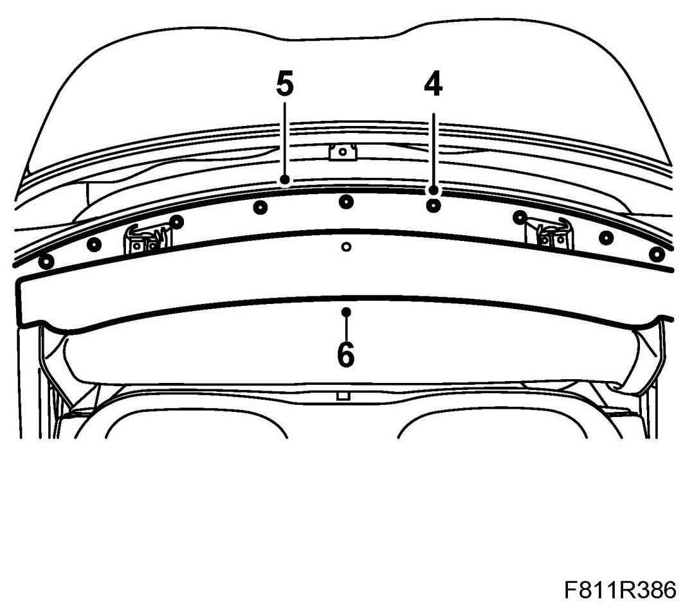
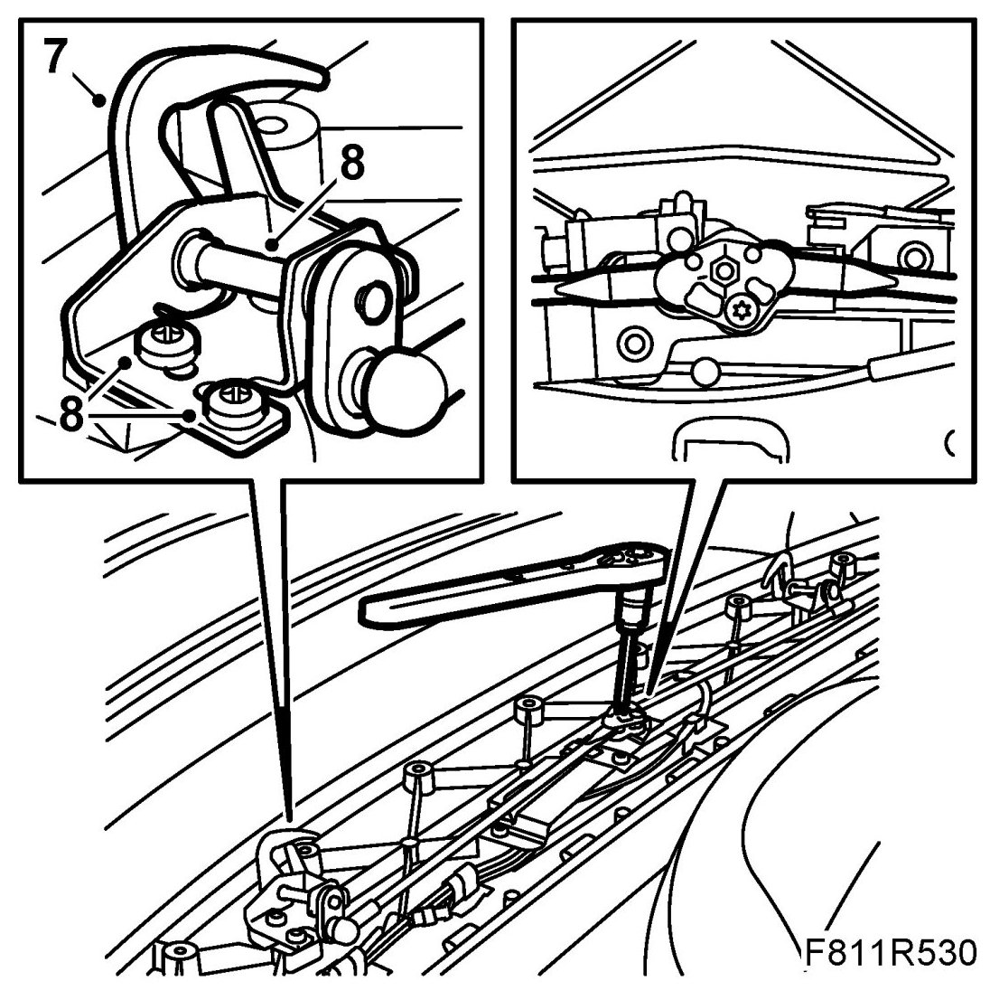
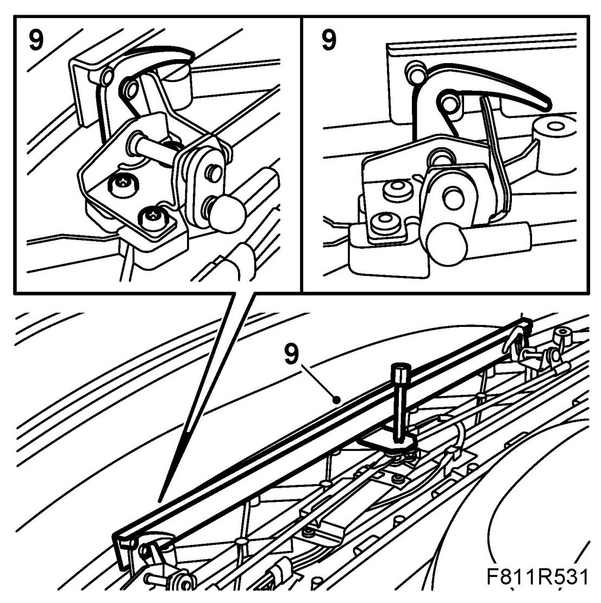
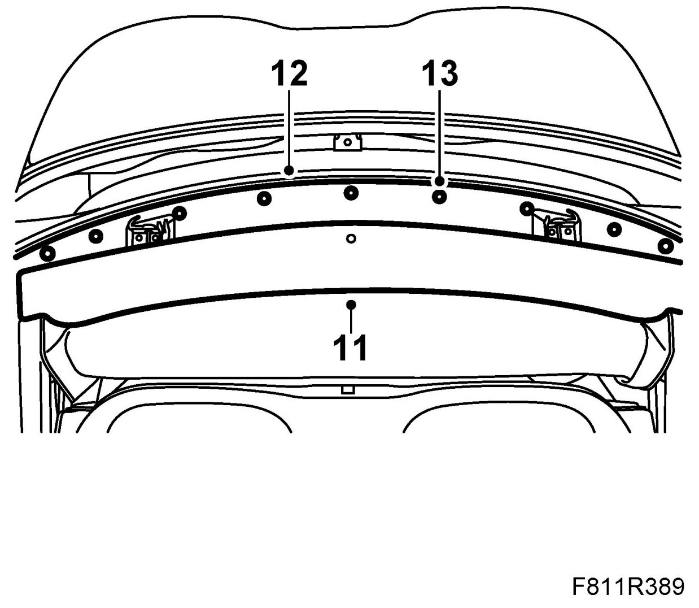
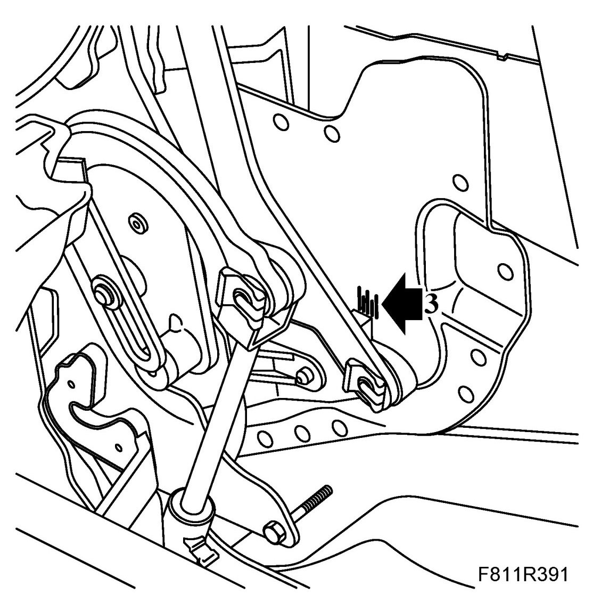
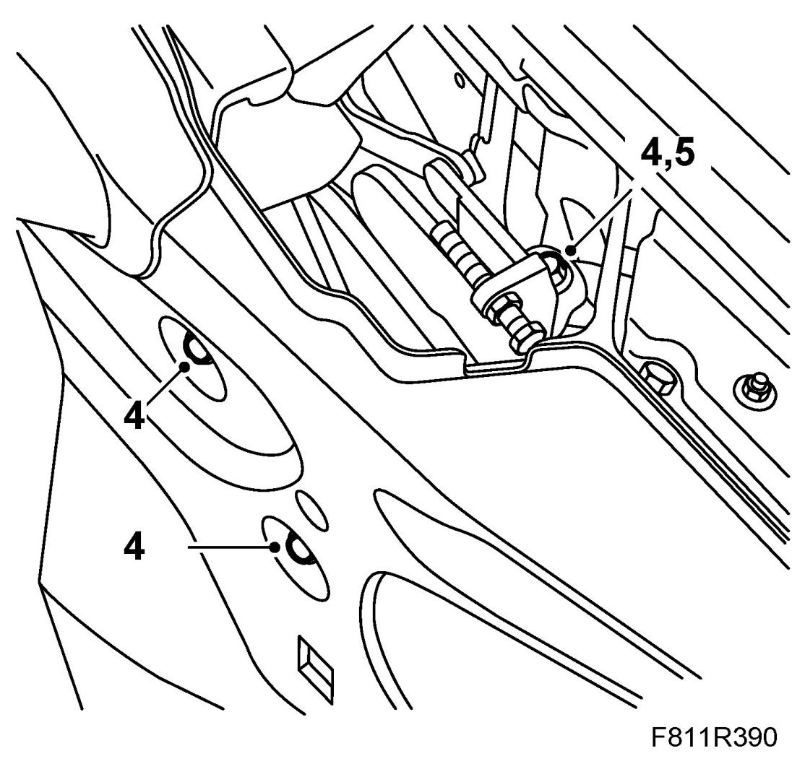
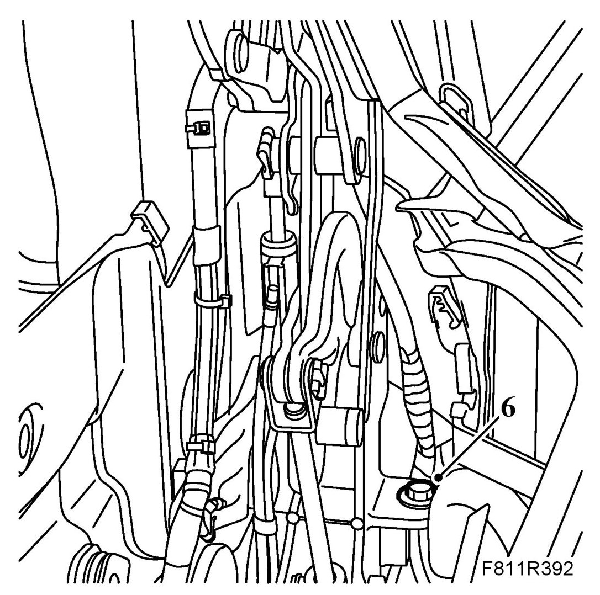
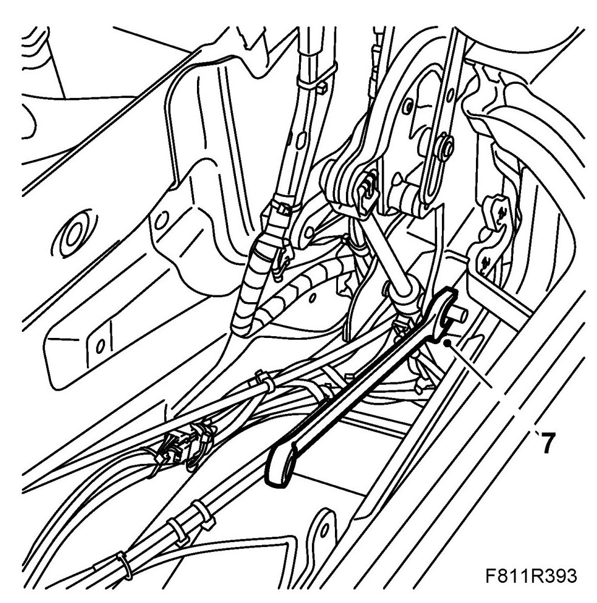
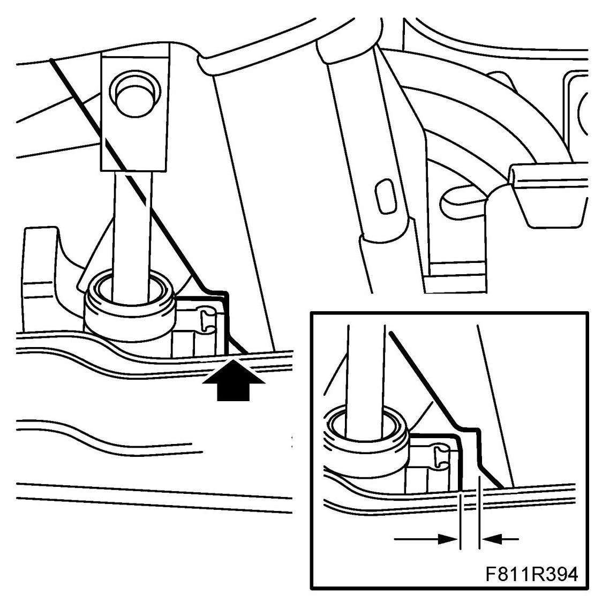

Adjusting the Soft Top and First Bow Lock Hooks
Adjusting The Soft Top And First Bow Lock Hooks
The boot lid and soft top cover must be adjusted correctly before the soft top can be adjusted optimally, see Boot lid, adjustment, CV, Adjustment, soft top cover and the sequence described below must be followed.
Inspection and adjustment of first bow lock hooks
1. Close the soft top. Make sure the lock hooks on the first bow mesh with the latch attachments exactly and that the first bow locks. The soft top must be flush at the front on the windscreen frame and the transition to the windscreen frame must be the same on the left and the right. If there are any problems raising the soft top or there is any noise, the firs bow lock hooks must be adjusted.
2. Open the boot lid and take out the emergency operation tool.
3. Open the soft top and leave the soft top cover open.
4. Remove the cover plate clip.

5. Remove the cover plate.
6. Remove the cover by pulling it backwards.
7. Lock the lock hooks by using the emergency opening tool. The lock hooks must be completely locked.

8. Unscrew the bolts to the lock hooks' brackets.
9. Position the setting tool in place. Use the emergency operation tool to hold the tool in the correct position. The hooks must be in line with the tool. Adjust in the lock hooks and tighten the bolts.
NOTE: Use a clamp if possible to hold the tool in place.

10. Close the soft top automatically. Make sure that the lock hooks engage precisely into the windscreen frame latch attachments and fully lock the first bow.
11. Fit the front cover.

12. Fit the cover plate.
13. Fit the cover plate clip.
Adjusting the soft top
Upward/downward, forward/backward
This adjustment can be made provided the lock hooks on the first bow have been adjusted.
1. Remove Seat cushion, rear seat, CV, Backrest, rear seat, CV and Rear side trim, CV.
2. Close the soft top automatically. Leave the soft top cover open.
3. There is a graduation to facilitate forward/backward adjustment.
If the soft top is being adjusted "forward/backward", it must be done as follows.

4. Loosen the retaining bolts for the soft top mechanism on both sides.

5. If the soft top is also being adjusted "upward/downward", the outer retaining bolts must be removed.
NOTE: Lateral adjustment is not possible because the soft top mechanism is mounted on the body attachment plate.
6. Adjusting upward/downward: Remove or add a washer under the bracket. Originally, one washer is fitted. If necessary, it is possible to either add another washer or not have a washer at all. A maximum of two washers may be fitted on each side. Fit the retaining bolts.

7. Adjustment forward/backward: Place a 17mm box wrench on the soft top mechanism hexagon.

8. Pretension the mechanism by pressing down the wrench approx. 40 Nm so that the gap disappears. This must be done so that the soft top has a correct movement.

9. Hold the box wrench in this position and tighten the bolts securing the soft top mechanism.
10. Repeat this adjustment on the opposite side.
11. Open and close the soft top. Make sure that the lock hooks engage precisely into the windscreen frame latch attachments and fully lock the first bow. Operate the soft top several times and check the fit and movement of the soft top. The first bow must move in an even and narrow movement.
12. Check the fit of the side and door windows, adjust if necessary, see Adjustment of windows and door mirror base seal .
13. Fit Rear side trim, CV, Seat cushion, rear seat, CV and Backrest, rear seat, CV.